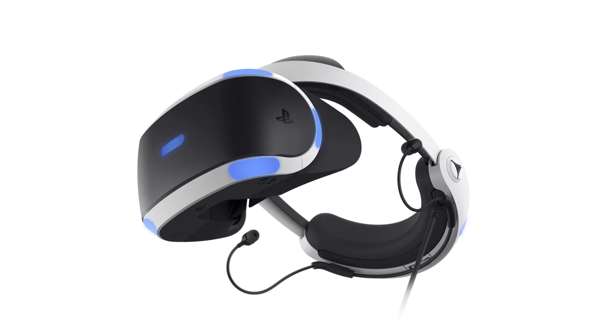

What is Virtual Reality (VR)?
Source: PlayStation VR
Virtual Reality (VR) is the usage of computer-generated simulation that allows a person to interact with a three-dimensional (3D) image or other sensory environment. Generally, Virtual Reality (VR) systems generate realistic images, sounds and other sensations by using either virtual reality headsets or multi-projected environments in order to simulate a user's physical presence in a virtual environment.
What is Metaverse?
Source: HSBC
Metaverse is a virtual worlds which users can be represented by avatars in a three-dimensional (3D) environment. They are able to interact with other users and the 3D environment so as to create social and economic connection. Moreover, Metaverse is one of the feature of Web 3.0 which utilities blockchain technology to allow users to create, own and control their own data by using blockchain technology rather than storing it on a centralised database owned by a third-party technology provider.
How do Virtual Reality (VR) and Metaserverelate to future banking?

Source: HSBC
According to the rapid projected growth of VR headsets, it reveals that the demand of VR devices is anticipated increase in the coming years. In a bid to cater the trends of popularity of Virtual Reality (VR), developing Metaverse is a good choice for future banking which enables users to conduct financial transaction and receive banking service in a virtual world without time and distance constraint. Besides, Metaverse use blockchain technology which can ensure users to exchange information and make digital transactions securely and transparently.